Explore Amsterdam
A Brief History
Amsterdam grew from a 13th-century dam on the Amstel River into a major port during the Dutch Golden Age of the 17th century. Canal rings, merchants' houses, and the East India Company headquarters reflect that trading wealth. Jewish history includes the Anne Frank House from the World War II occupation. The canal district was inscribed as a UNESCO World Heritage site in 2010.
Attractions Map
Top Sights & Activities

Canals of Amsterdam
Developed primarily in the 17th century during the Dutch Golden Age, this extensive canal network was an innovative urban planning project for water management, defense, and transport. The concentric rings reflect the historical wealth generated from global maritime trade.

Rijksmuseum
Relocated to its current building in 1885, this national museum houses an extensive collection of Dutch art and history. It was established to preserve and showcase the cultural legacy of the Netherlands, most notably works from the 17th-century Golden Age.

Begijnhof
Dating back to the early 14th century, this enclosed courtyard was established for a Catholic sisterhood of unmarried women who lived a religious life without monastic vows. It remains a tranquil enclave of historic residential architecture, preserving a unique aspect of Dutch religious history.

Basilica of Saint Nicholas
Built in the late 19th century, this prominent Catholic basilica features a Neo-Baroque and Neo-Renaissance design. Dedicated to the patron saint of sailors, it reflects the city's deep historical connection to maritime trade and the resurgence of Catholic life in the Netherlands.

Royal Palace Amsterdam
Originally constructed as a city hall in 1655, this massive building was a symbol of civic wealth and republican power during the Dutch Golden Age. Converted into a royal palace in 1808, it functions today as one of the official residences of the Dutch monarch.

Rembrandtplein
Established in 1668 as a dairy market, this square evolved into a major center for city life. It was renamed in 1876 to honor the famous Dutch Golden Age painter, marked by a prominent statue at its center, bridging its historical origins with its modern role as a cultural space.

Amsterdam Centraal Station
Opened in 1889, this monumental transit hub blends Gothic and Renaissance Revival styles. Built on artificial islands, its construction modernized Dutch transport networks and significantly altered the city's waterfront, acting as a primary gateway for international travel.

Zaanse Schans Windmill
This heritage area recreates an 18th and 19th-century Dutch village. The iconic windmills were crucial industrial engines for sawing wood, grinding spices, and pressing oil, offering a tangible connection to early industrial techniques and traditional water management systems.
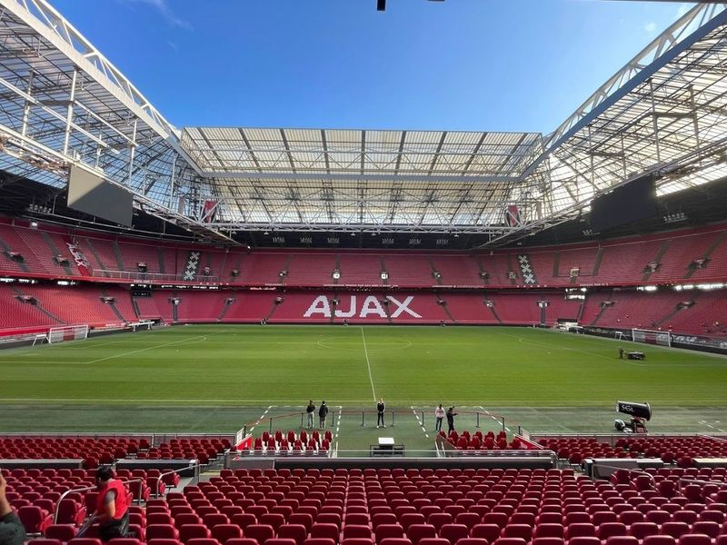
Johan Cruijff Arena
The Johan Cruijff Arena, formerly known as the Amsterdam ArenA, is a renowned stadium in Amsterdam. It serves as the home ground for Ajax FC and also hosts international matches and events like concerts and dance performances. Named after the legendary Dutch footballer Johan Cruyff, this 55,000-seater stadium offers guided tours that include visits to the museum, locker rooms, trophy room, and a VIP section.
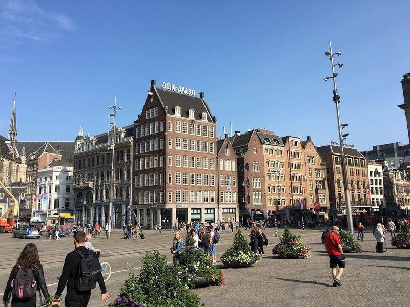
Dam Square
Dam Square, a historic and bustling public square in the heart of Amsterdam, has been a popular gathering place since the 17th century. Flanked by the Royal Palace, it offers countless opportunities for captivating Instagram photos. The nearby church showcases an impressive organ, stained glass windows, and periodic special exhibitions. With its vibrant atmosphere and rich cultural experience, Dam Square is a must-visit destination in Amsterdam.
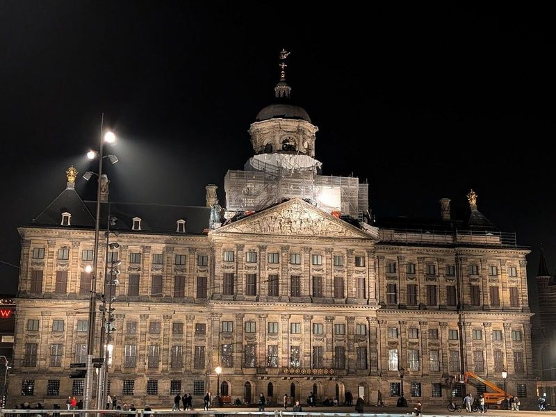
National Monument
The National Monument in Amsterdam is a significant landmark and memorial dedicated to the remembrance of World War II. Standing at 22 meters high, this white travertine monument features relief sculpting and serves as a symbol of pride and bravery. Established in 1956, it houses a small museum with compelling exhibits. In the city at Dam Square, it is surrounded by other notable attractions such as the Royal Palace and The Nieuwe Kerk.
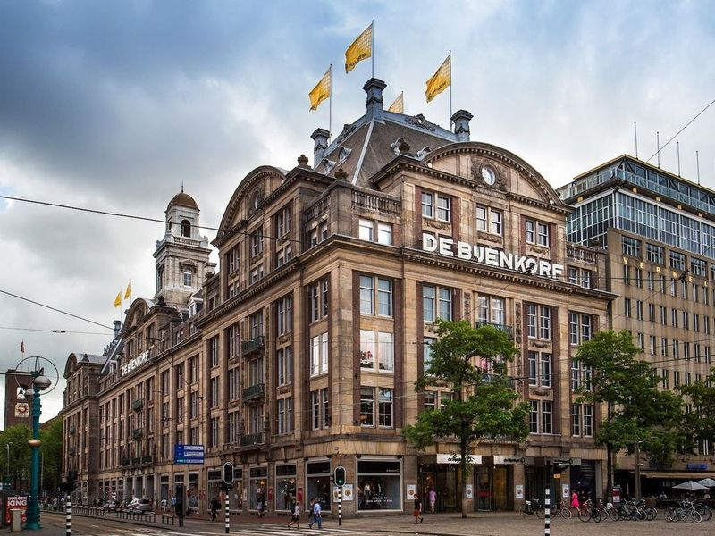
De Bijenkorf
De Bijenkorf Amsterdam is a renowned luxury department store In the city on the Dam. The impressive building boasts a facade and stylish interior, offering an extensive range of high-end fashion, cosmetics, accessories, and home goods. travellers can also enjoy a delightful shopping experience at the De Bijenkorf shopping region with numerous clothing stores, Dutch brands, and a large shoe department.
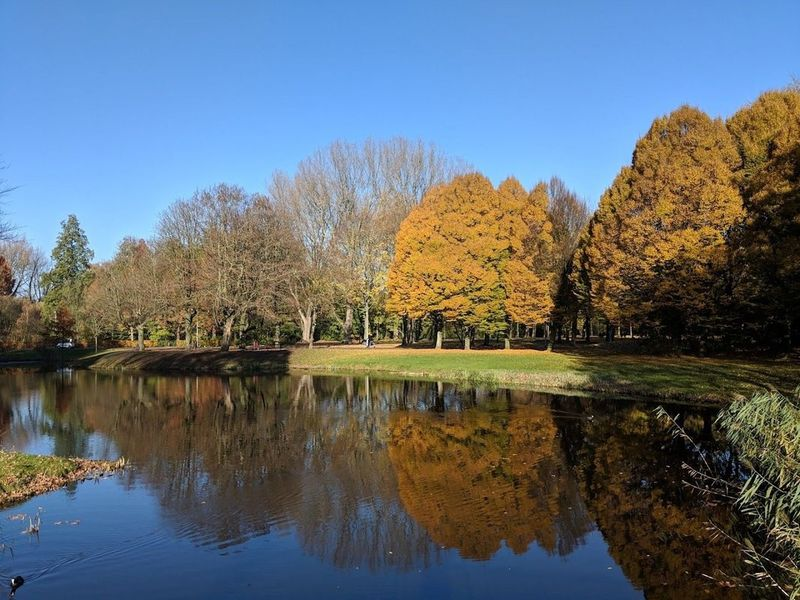
Beatrixpark
Nestled in the heart of Amsterdam Zuid, Beatrixpark is a serene escape from the city's hustle and bustle. Established in the 1930s, this charming park features beautifully landscaped paths that meander around a tranquil pond, making it an ideal spot for leisurely strolls or invigorating jogs. The park's atmosphere is distinctly more relaxed compared to other popular parks like Vondelpark, attracting dog walkers and families alike.
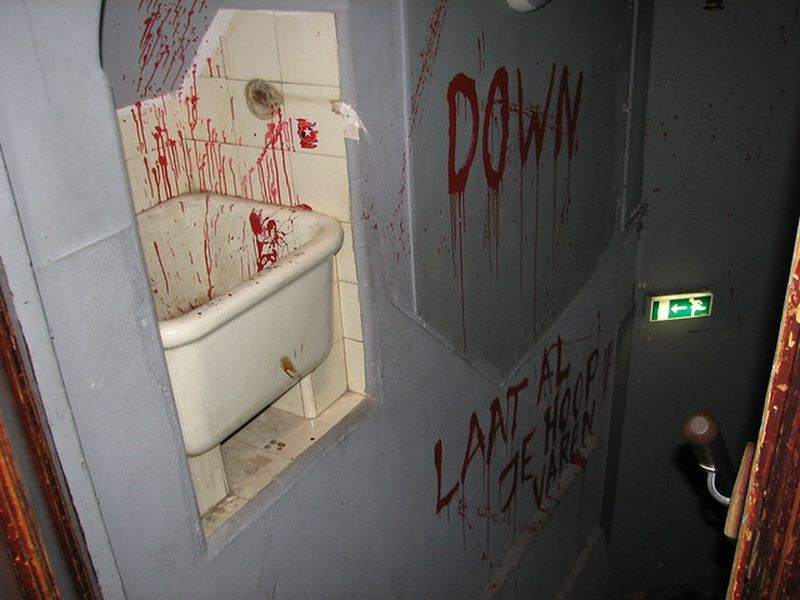
Dungeon Amsterdam
The Amsterdam Dungeon offers a unique and thrilling experience with live actors, special effects, and historical sets that bring Amsterdam’s dark past to life. The site is catalogued as a tourist attraction. Dungeon Amsterdam is listed among principal sites for Amsterdam within Netherlands.
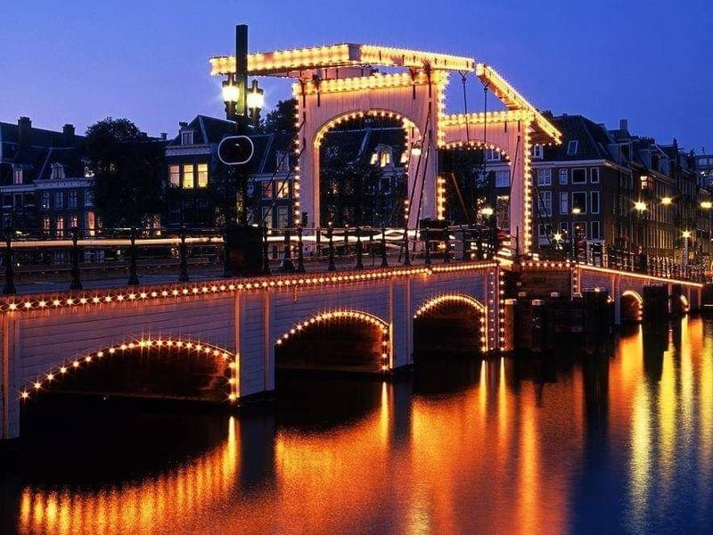
Skinny Bridge
The Skinny Bridge, also known as Magere Brug, is a historic and drawbridge in Amsterdam. It was originally built in 1672 and has been succeeded by the current bridge dating back to 1969. The bridge is made of African azobe wood and spans the Amstel River between Kerkstraat and Nieuwe Kerkstraat.
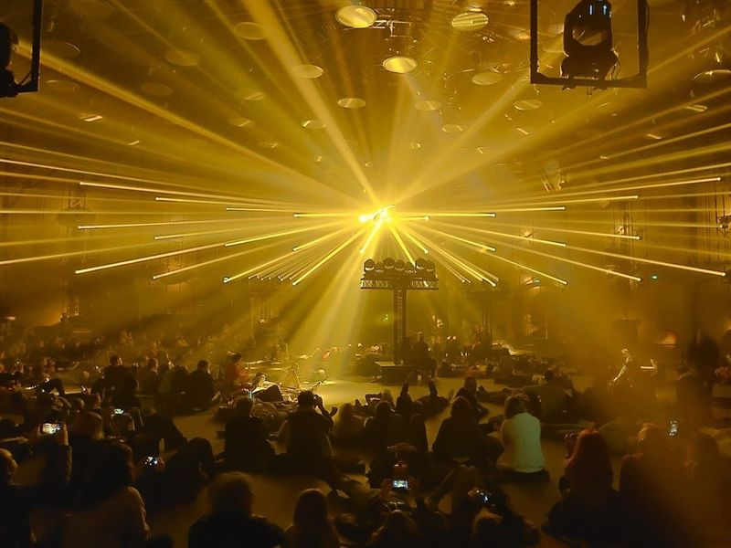
Gashouder Westergasfabriek
Gashouder Westergasfabriek, situated in the Westerpark area, is a vibrant cultural complex housed in former industrial buildings. It offers an array of enticing amenities such as bars, restaurants, coffee roasters, a microbrewery, and an art-house cinema. The venue hosts regular food markets, mini-festivals and events like the lively Sunday market held monthly. travellers praise its beautiful setting and well-organized events with light shows.
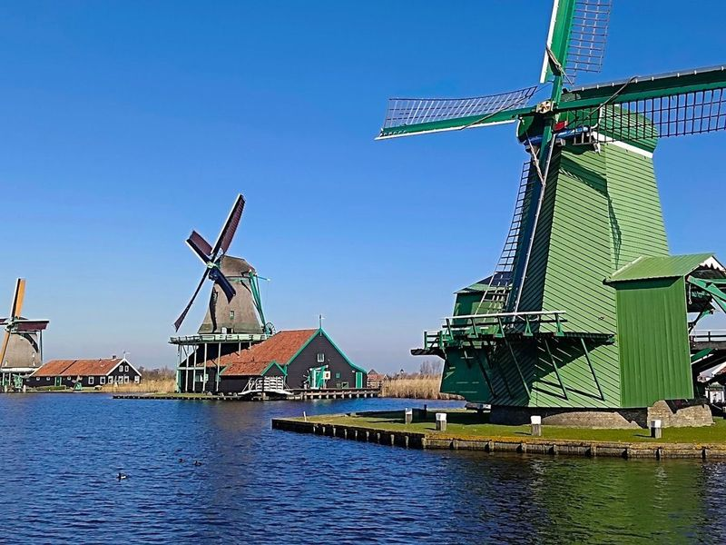
Wooden Shoe Workshop of Zaanse Schans
In the charming Zaanse Schans, a visit to the Wooden Shoe Workshop is an must. Nestled in a historic 18th-century grain and snuff warehouse, this family-run workshop offers fascinating demonstrations of traditional clog-making techniques using both hand tools and vintage machinery. Here, marvel at one of the Netherlands' largest collections of wooden shoes, showcasing everything from antique peat clogs to intricately carved and even diamond-studded designs.
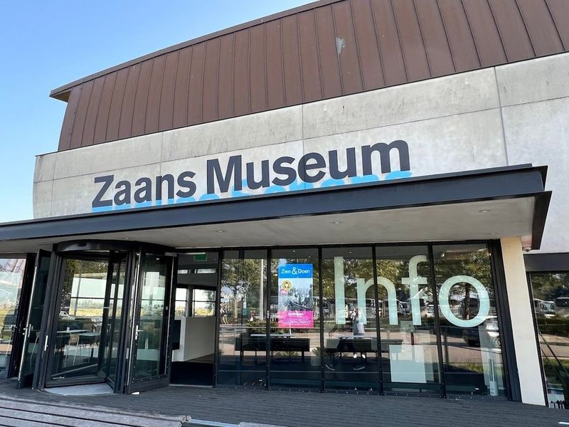
Zaans Museum
The Zaans Museum in Zaandam offers a captivating journey through the social and industrial history of the region. It showcases a diverse range of exhibits including art, domestic items, costumes, and model ships. The museum also features the Verkade Experience, providing insight into the history of chocolate and biscuit making.
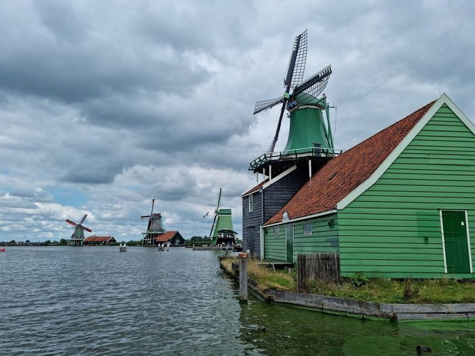
Paintmill De Kat
Paintmill De Kat, originally built in 1646 as an oil mill, was later reconstructed and relocated to its current position. travellers can explore the interior of this windmill by climbing steep stairs to reach the highest balcony for a panoramic view. The windmill is still operational and serves a practical purpose by producing pigment for paint. It offers an intriguing experience showcasing how mills were involved in paint production.
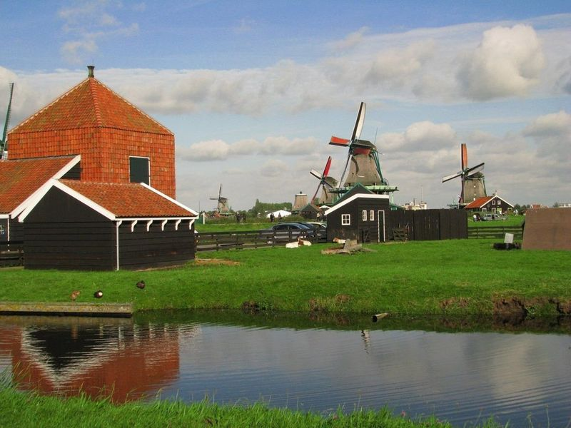
Windmill De Zoeker
Windmill De Zoeker is a captivating destination that immerses travellers in the rich history of traditional Dutch windmills. Located just 4.5 km from the charming Zaanse Schans, this historic site showcases how each mill functioned as a small industry, contributing to local craftsmanship by processing wood and creating vibrant colors using wind power.
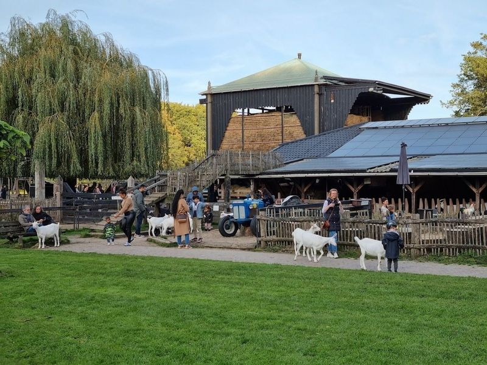
Goatfarm Ridammerhoeve
Nestled near Amsterdam, Goatfarm Ridammerhoeve is a delightful destination for families seeking a hands-on experience with nature. This working farm offers an array of activities that allow travellers to interact closely with its charming residents, including goats, chickens, and cows. Children can enjoy feeding baby goats and even petting other animals like pigs and horses.
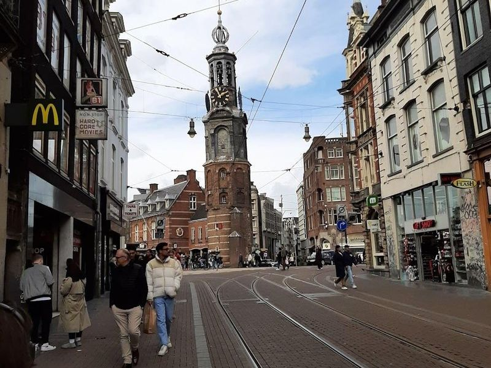
Munttoren
The Munttoren, a captivating landmark in the heart of Amsterdam, is steeped in history and charm. Originally part of the city's fortifications built around 1480, this striking tower has undergone significant transformations over the centuries. After a devastating fire in 1618 that damaged its original structure, it was beautifully reconstructed by Hendrick de Keyser in 1620.
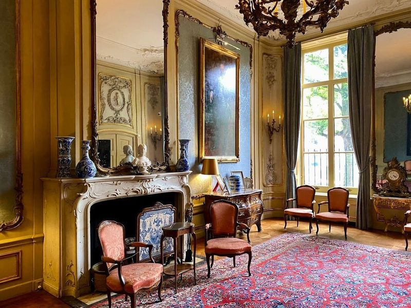
Museum Van Loon
Museum Van Loon is a well-preserved canal-house museum in Amsterdam, dating back to the late 17th century. Once owned by the prominent Van Loon family, it now serves as a museum showcasing a diverse collection of paintings, furniture, silver, and porcelain. The interior and landscaped grounds are open for travellers to explore and appreciate the decorative arts, family treasures, and city history.
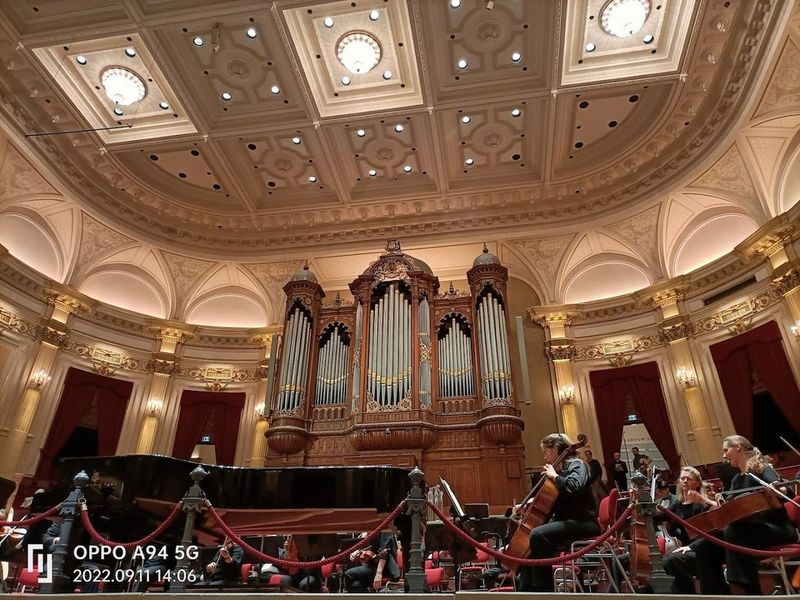
The Concertgebouw
The Concertgebouw, a 19th-century concert hall, is renowned for its exceptional acoustics and is home to the Royal Concertgebouw Orchestra. The venue hosts top-tier musical performances featuring musicians and singers in an elegant neo-classical setting. travellers can enjoy free lunchtime concerts on Wednesdays in the smaller auditorium, the Kleine Zaal, offering a taste of the cultural richness of Amsterdam.
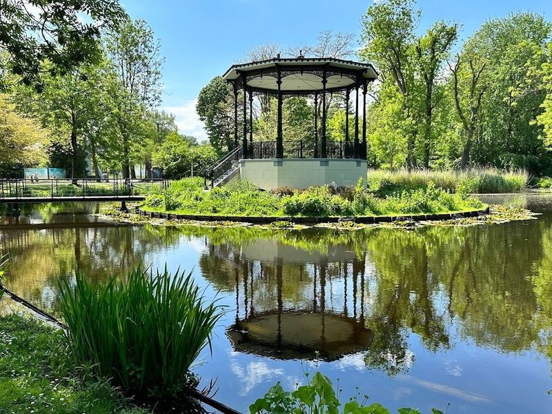
Vondelpark
Vondelpark is a 19th-century urban park in Amsterdam, known for its romantic ambiance and serene setting. It's a popular spot for couples, offering beautiful landscapes with colorful flowers and trees. The park features cafes and restaurants where couples can enjoy intimate meals. Additionally, it's a favored location for engagements and engagement photoshoots. Vondelpark offers various attractions such as a rose garden, an open-air theater, tennis courts, and a paddling pool.
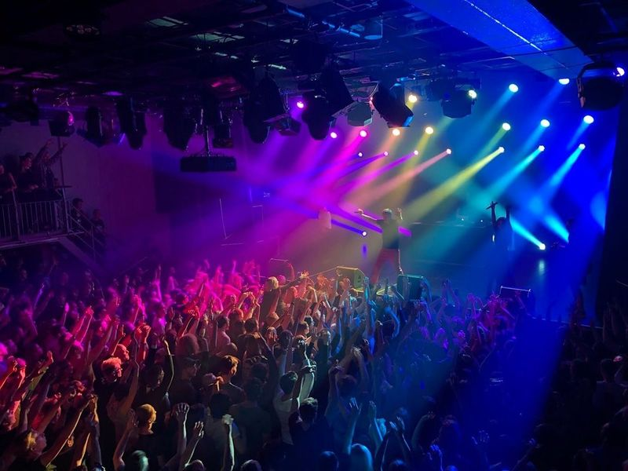
Melkweg
Melkweg, a long-standing non-profit venue located at Leidseplein in Amsterdam, is housed in a former milking factory and has been an integral part of European counter-culture since the 1970s. This cutting-edge music and performance venue hosts a variety of events including concerts, club nights, arts exhibitions, and cinema screenings. The original dairy building has been expanded to include modern extensions such as an art gallery and cafe.
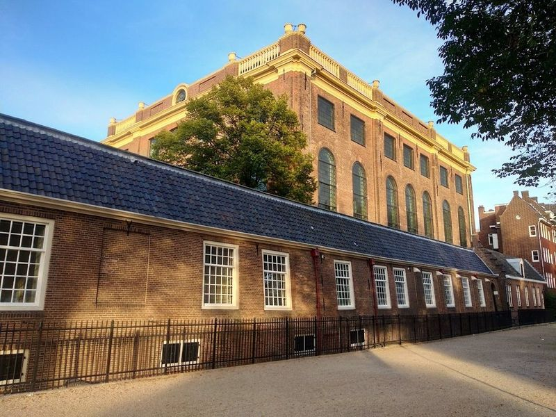
Portuguese Synagogue of Amsterdam
The Portuguese Synagogue of Amsterdam, completed in 1675, is a grand and light-filled synagogue located in the attractive Jewish Quarter. It was built for thousands of Jews who sought refuge in Amsterdam from religious persecution on the Iberian Peninsula. The building's design is inspired by the Temple of Solomon in Jerusalem and features original wooden barrel-vaulted ceilings illuminated by over 1,000 candles and natural light from 72 windows.
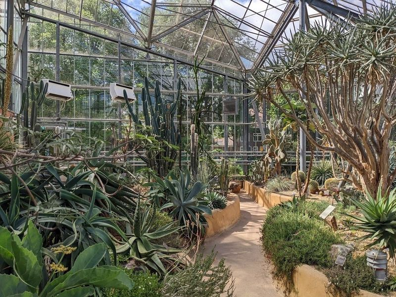
Hortus Botanicus
Hortus Botanicus, situated in the charming Amsterdam Oost district, is a historic botanical garden dating back to 1682. This picturesque destination boasts a diverse collection of exotic plants from around the globe, housed in classic greenhouses that evoke the bygone era of plant exploration. With over 6,000 indigenous and non-native trees and plants flourishing in its lush outdoor gardens and greenhouses, travellers can marvel at species imported by Dutch East India Company traders.
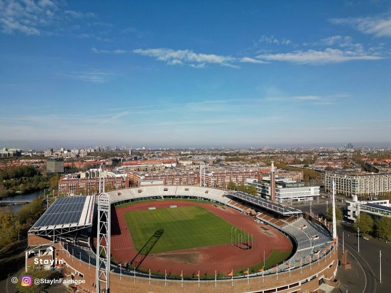
Olympic Stadium Amsterdam
The Olympic Stadium Amsterdam, located in the south of the city, is a historic site that hosted the 1928 Olympic Games. It features guided tours and an interactive exhibition for travellers to explore its rich sporting history. The adjacent Marathon tower once lit the Olympic flame. Additionally, nearby attractions include Aveda Dayspa Amsterdam and Mama Kelly restaurant, offering a range of experiences from spa treatments to dining with views of athletic activities on the grounds.
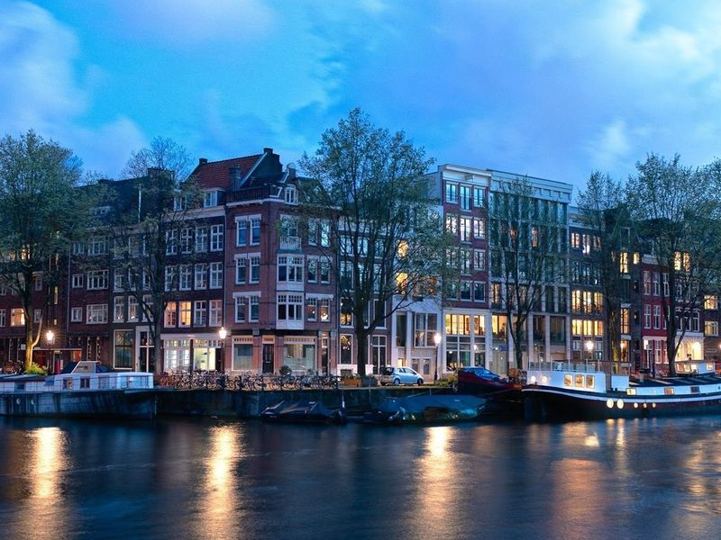
Montelbaanstoren
Montelbaanstoren is a 16th-century defensive tower located in Amsterdam, originally built as part of the city walls. It stands at the intersection of the Oude Schans and Waalseilandsgracht canals and holds significant historical importance. The tower was constructed in 1512 for defense purposes, with an octagonal tower and spire added by Hendrick de Keyser in 1606.
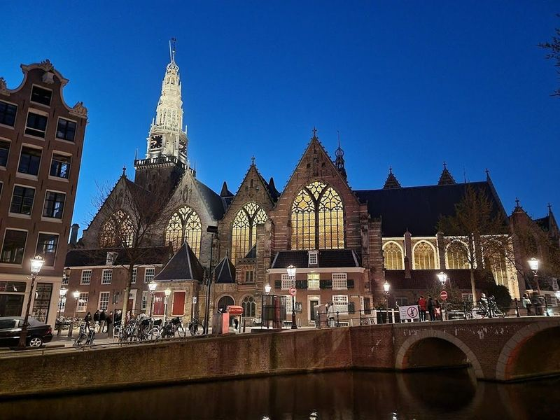
Oude Kerk Amsterdam
The Oude Kerk, also known as the Old Church, is a 13th-century building In Amsterdam's Red Light District. Despite its location, it offers travellers enchanting narrow cobbled streets and medieval architecture. This historic church features the largest medieval wooden vault in Europe, impressive stained glass windows, and over 2,500 graves including that of Rembrandt's wife.
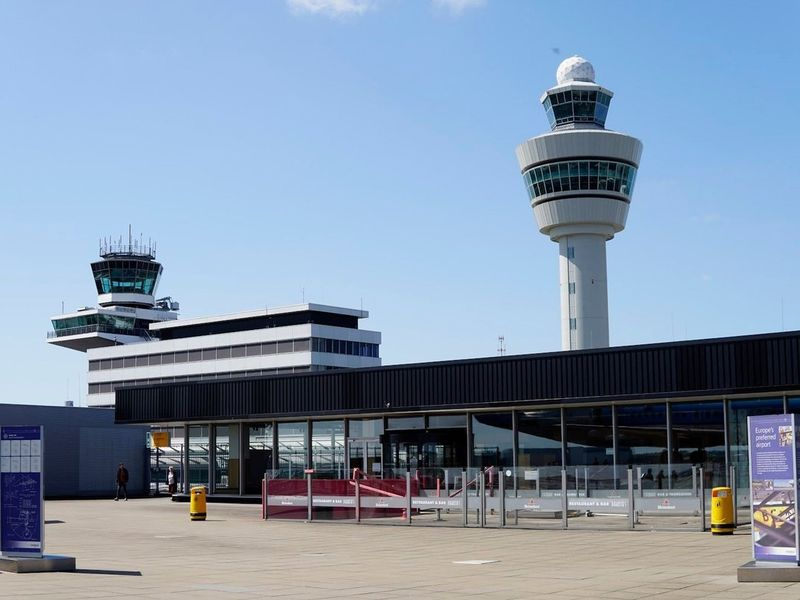
Panorama Terrace
Panorama Terrace at NEMO Science Centre in Amsterdam offers a 22m high view of the city and is accessible to the public without an entrance fee. During summer, it transforms into a city beach with comfortable deckchairs, a large chess set, and water features. At Schiphol Airport, the Panorama Terrace on the 3rd floor provides excellent views of airport operations and runways. travellers can also explore an old Fokker 100 KLM aircraft on display.
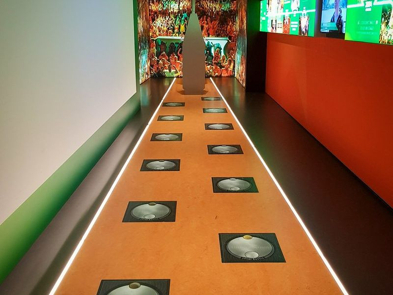
Heineken Experience
The Heineken Experience is an interactive tour of the historic Heineken brewery, offering insight into the brewing process and a tasting session. The site is catalogued as a tourist attraction. Heineken Experience is listed among principal sites for Amsterdam within Netherlands.
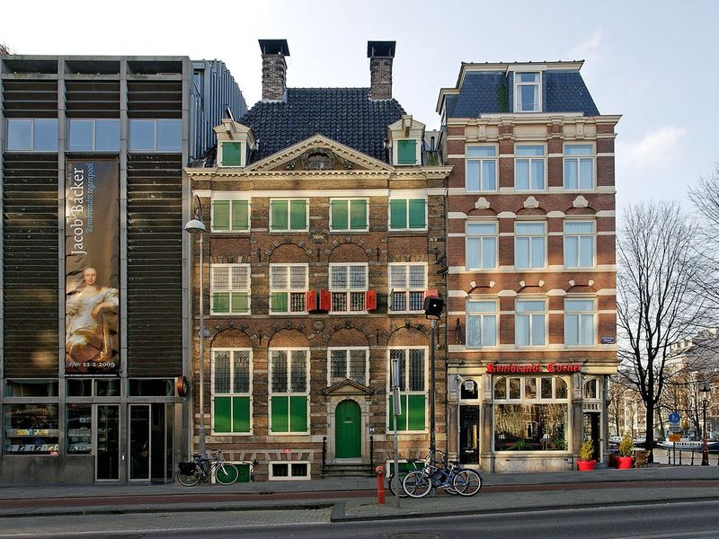
Rembrandt House Museum
The Rembrandt House Museum is a restored 17th-century house where the artist lived and worked for 20 years. It offers travellers a comprehensive look into his life, featuring a complete collection of his etchings and collectibles that influenced his work. The museum also includes reconstructions of Rembrandt's living area and workspace, providing an immersive experience that transports travellers back to the 17th century.
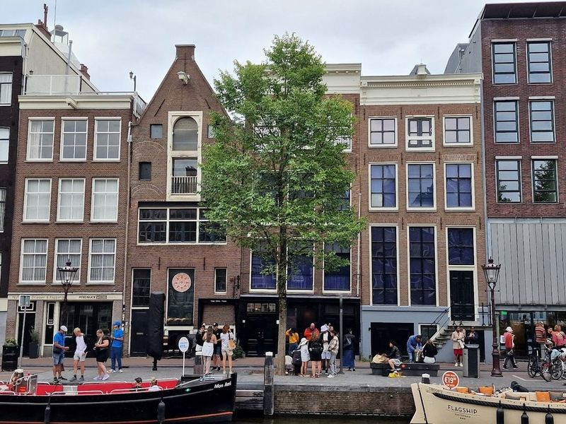
Anne Frank House
The Anne Frank House, In Amsterdam, is a museum that offers travellers a glimpse into the harrowing experience of Anne Frank and her family during World War II. Housed in the actual building where they hid from the Nazis for two years, the museum provides an immersive look at this dark period in history. travellers can explore the old part of the house and the secret annex, gaining insight into Anne Frank's story and Amsterdam's wartime past.
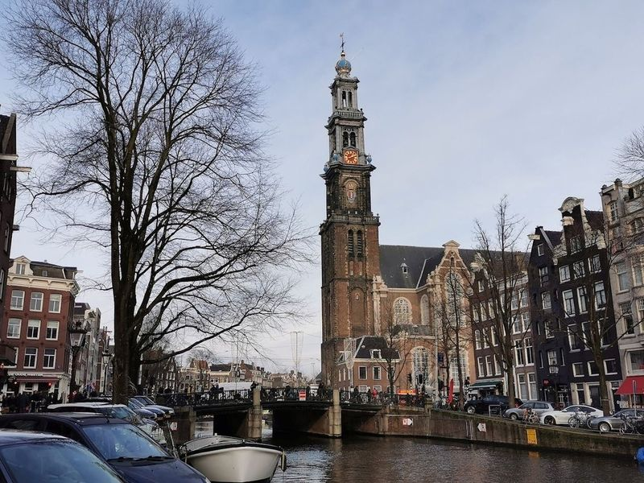
Westerkerk
Westerkerk, also known as The Western Church, is a significant Protestant church in Amsterdam and the largest of its kind in the country. Built in 1631, it showcases Dutch Renaissance architecture and features a crown-topped spire. The church's bell tower, Westertoren, is an symbol of Amsterdam and offers panoramic views of the city from its balconies. Notably, it was a source of comfort for Anne Frank during her time in hiding.
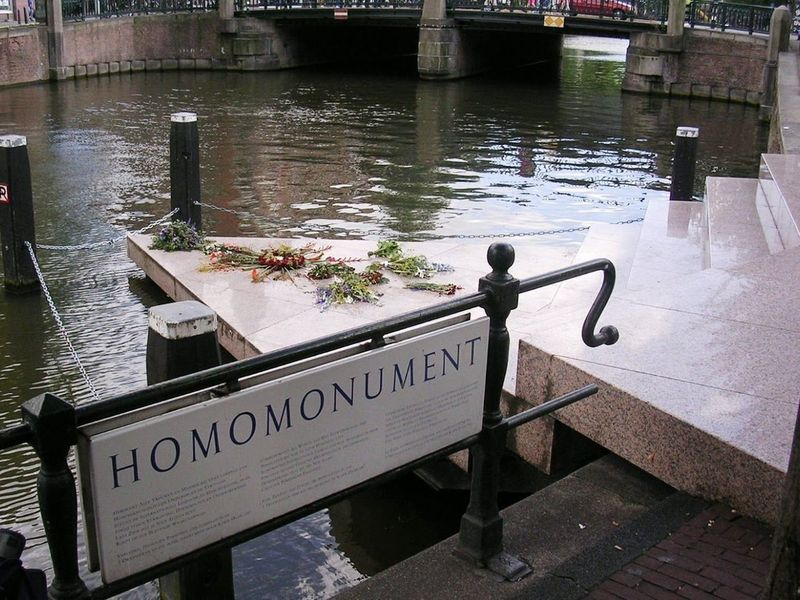
Homomonument
The Homomonument in Amsterdam is a significant public sculpture that serves as a memorial to those persecuted for their homosexuality. Created by sculptor Karin Daan, the monument consists of three pink triangular granite blocks, symbolizing the badges that Nazis forced homosexuals to wear. Positioned in a triangle on the canal bank, each point of the monument holds symbolic significance, pointing towards landmarks like the National War Memorial and Anne Frank House.
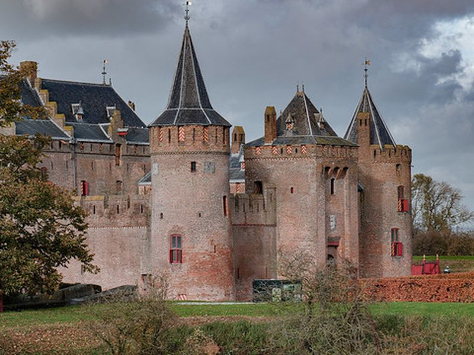
Muiderslot
Located just outside Amsterdam, Muiderslot is a well-preserved medieval castle dating back to the 13th century. Surrounded by a moat and beautiful historic gardens, it features classic towers, drawbridges, and armor exhibits. Visitors can explore the furnished rooms that recreate life in the Dutch Golden Age and enjoy scenic views of the Vecht river and IJmeer.
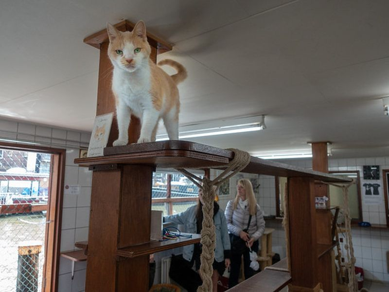
De Poezenboot
The Catboat, or De Poezenboot, is a unique floating animal sanctuary situated on a picturesque houseboat along the Singel canal in Amsterdam. Established in 1968, it provides a safe haven for stray and abandoned cats. Visitors can meet the resident felines in this unusual waterside setting, though space is limited and visits operate on a first-come, first-served basis.
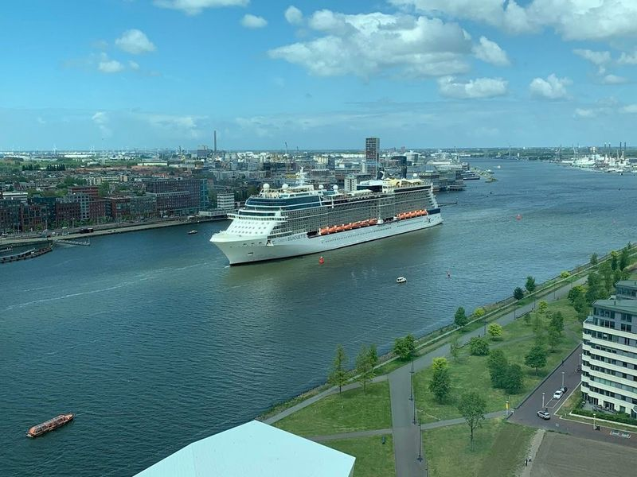
A'DAM Lookout
A'DAM Lookout, formerly known as ADAM Toren, is a 22-story tower located on the north shore of the IJ in Amsterdam. Originally built as the headquarters of Royal Dutch Shell, it has been transformed into a hotel with bars and restaurants. travellers can take a glass-ceilinged elevator ride to reach A'DAM Lookout, an observation deck offering panoramic views of the IJ River and Amsterdam's historic center.